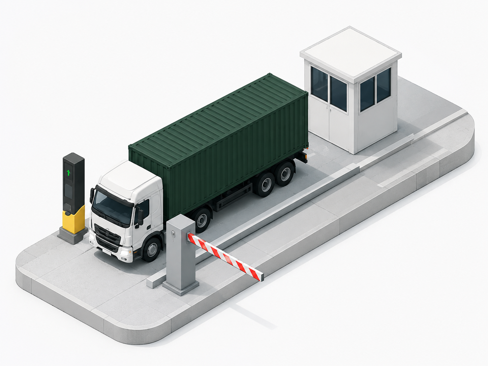

Gate & access control
Know Who and What Is on Site - Matched Against What Was Expected.
CargoMan manages the operational record of people and vehicles entering and leaving a site, matching arrivals against pre-advised movements and keeping a clear, auditable view of who is on site.
The operational problem
Vehicles Arrive Without Reliable Pre-Advice or Context.
Without a connected gate record, security teams work from a logbook or a guess, and there's no clean audit trail of who came, when, and why.
Without Connected Gate Control
- Security checks vehicles against a printed list or nothing at all
- Entry and exit times live in a logbook, not the operational record
- Matching an arrival to an order or pre-advisement is manual
- Reconstructing "who was on site" after the fact is slow
With CargoMan
- Arrivals are matched against expected-truck and pre-advisement records
- Entry, exit, and security checks are timestamped against the vehicle
- Gate activity links directly to the order, client, and transporter
- Current on-site status and full audit history are always available
How the CargoMan workflow works
From Expected Movement to Recorded Exit.
Pre-Advisement Sets the Expectation
Where configured, an expected-truck or pre-advisement record gives the gate context before the vehicle arrives.
Identify the Vehicle at the Gate
Vehicle, driver, and transporter are identified and matched against the expected movement.
Record Entry and Checks
Arrival, entry timestamp, gate, and any security questions or checks are captured against the record.
Track On-Site Status
The vehicle's current status is visible while it's on site, linked to weighbridge, warehouse, or container activity.
Record Exit
Exit gate and timestamp close the record, completing the audit trail for that visit.
Key capabilities
What the Access Control Module Covers.
- Arrival, entry, and exit timestamps
- Gate and exit-gate recording
- Vehicle and driver information
- Visit or movement type
- Site, client, order, and transporter context
- Security questions and checks
- Linkage to expected-truck records
- Current on-site status
- Controlled access based on user role
- Full audit history of changes
CargoMan's access control is an operational record, distinct from physical security hardware. Native barrier, biometric, ANPR, or licence-disc integrations are confirmed per deployment, not assumed.
Inside CargoMan
Every Vehicle Held, Checked, and Recorded at the Gate.

Gate & Access Control
Each vehicle is identified and checked at the barrier before entry, with the record carried into the rest of the operation.
Connected modules
What Gate Activity Feeds Into.
Evidence, controls & reporting
Every Entry and Exit, on the Record.
Gate activity is timestamped, user-attributed, and kept in full audit history - useful for security review, dispute handling, and site occupancy reporting.
- Full audit history of gate activity
- Role-based access to who can record or view entries
- Site occupancy and turnaround reporting
- Linkage to the order, client, and transporter on every record
Operations managers can see who is currently on site and cross-reference against expected movements, without walking out to the gate.
Where this matters
Any Site that Controls Who and What Comes Through the Gate.
Terminals & Depots
High vehicle throughput matched against pre-advised bookings.
Mining Logistics
Controlled site access with driver and transporter checks.
Multi-Site Groups
Consistent access records across every controlled location.
Talk to CargoMan
Let's Map Your Gate Workflow.
Show us how vehicles move through your gate today, and we'll demonstrate how CargoMan can connect the record.